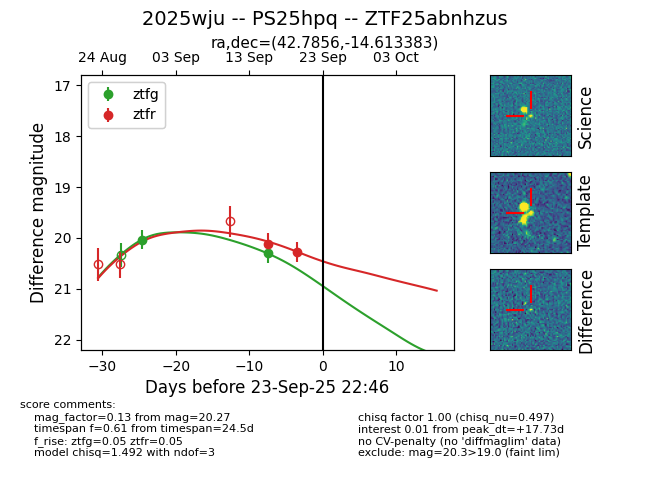
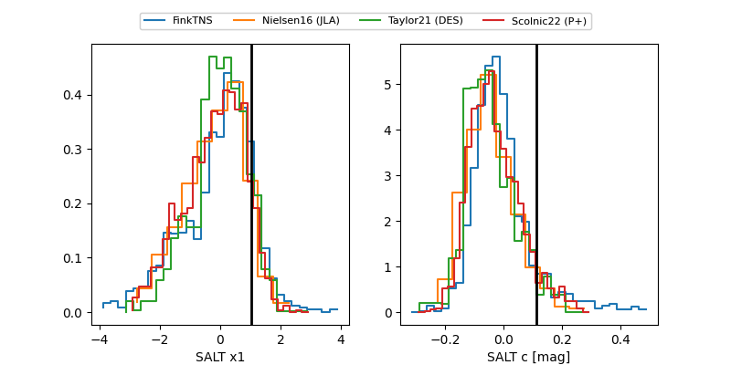

FINK: ZTF25abnhzus
Lasair: ZTF25abnhzus
ALeRCE: ZTF25abnhzus
TNS: 2025wju
YSE: 2025wju
ZTF25abnhzus (ztf,fink)
2025wju (tns,yse)
PS25hpq (panstarrs)
equatorial (ra, dec) = (42.7856,-14.61338)
galactic (l, b) = (194.8236,-59.47590)


last ztfg=20.30, ztfr=20.27
2 ztfg, 2 ztfr detections